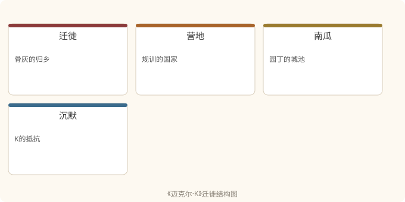

迈克尔·K的生活和时代
一、基本信息
| 作者 | J.M.库切 |
|---|---|
| 成书/出版 | 1983年（作者页 B161 口径：迈克尔·K的生活与时代（1983）） J.M. Coetzee — Encyclopaedia Britannica（百科全书） |
| 国别/地区 | 南非 |
| 时代 | 现当代 · 20世纪 |
| 体裁 | 长篇小说 |
| 语言 | 英语 |

《迈克尔·K》迁徙结构图（主题·结构图）
二、创作背景
作者页（B161）：库切 major_works 载'迈克尔·K的生活与时代（1983）'（B161 作者页定位，详见 chi 条核对）。
获奖（通说待核）：1983年英国布克奖。
题材（通说待核）：内战中园丁迈克尔·K带母亲骨灰回乡——'园丁'的生存哲学。
三、内容脉络
战乱中的迁徙：营地的规训与田园的南瓜（通说待核）。
四、主要人物表
| 人物 | 身份 | 说明 |
|---|---|---|
| 迈克尔·K | 园丁 | 兔唇的流浪者（通说待核） |
| 医疗官 | 军官 | 想'解密'他（通说待核） |
五、主题与艺术特点
- '园丁'的生存哲学（通说待核）。
- 营地的规训（通说）。
- 无名的内战（通说）。
六、影响与评论
- 作者页：库切代表作（B161 作者页口径）。
J.M. Coetzee — Encyclopaedia Britannica（百科全书） - 1983年布克奖（通说待核）。
J.M. Coetzee — Encyclopaedia Britannica（百科全书）
七、阅读建议
难点
- 南非内战背景。
- K的沉默。
- 《迈克尔·K的生活和时代》（人民文学出版社/浙江文艺出版社版本，通说待核）。
- 英文原版。
先《耻》后本作。
八、待核实
- 1983年出版（Ravan Press说）与布克奖核对。
- 迈克尔·K人名核对。
- 营地医疗官独白待核。
本页主要来源
J.M.库切的其他收录作品：迈克尔·K的生活和时代